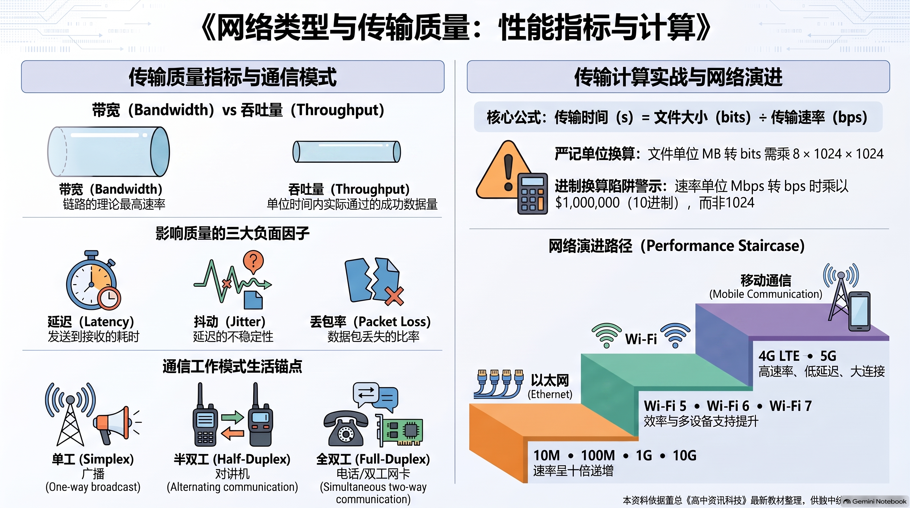

📊 本章全景思维导图与核心考点信息图
本图整合了董总《高中资讯科技（第二册）》第 2 章全部核心脉络，涵盖地理覆盖分类（PAN/LAN/MAN/WAN）、五大物理拓扑、资源架构及物理介质参数，支持点击全屏高清缩放复习。

🎯 本章学习目标与核心考点清单
适用对象：马来西亚华文独立中学（董总新课标）高一/高二师生
教材基准：董总教科书《高中资讯科技（第二册）》（2024 年版）第 2 章“网络类型与传输质量”与官方参考答案
核心素养：系统思维、网络架构决策能力、物理传输介质工程选型与网络 QoS 优化意识

🖼️ 【全景幻灯 01 导读】全章知识架构与核心素养：全景导航 2.1 网络分类与拓扑、2.2 传输介质与传输质量两大核心板块，建立结构化物理层与链路层认知体系。
1.1 核心考查三维目标
- 识记（Knowing）：熟记网络按地理覆盖尺度划分的标准缩写及应用范围（PAN, LAN, MAN, WAN）；准确掌握星状、总线、环状、网状、树状五大拓扑的布线形态与优缺点；熟记主从式（Client-Server）与对等式（P2P）的定义及代表性应用；牢记双绞线、同轴电缆、光纤等传输介质的物理参数。
- 理解（Understanding）：透彻明晰带宽（Bandwidth）与吞吐量（Throughput）的本质差异；掌握延迟（Latency）与抖动（Jitter）对音视频网络电话（VoIP）的具体危害；领会双绞线“两两绞合”利用差分信号抵消电磁干扰（EMI）与串扰（Crosstalk）的物理机制；理解信号衰减（Attenuation）的本质与中继器（Repeater）的波形再生作用。
- 综合应用（Synthesizing）：能够结合中小企业真实组网情境（如小型 5 人设计工作室、大型跨城市跨州企业集团分支机构联网），综合考量网络拓扑、传输媒介、资源共享模式与 VPN 数据安全，设计出最具性价比与高可用性的工程网络方案。
1.2 核心考点通关背诵清单 (Checklist)
提示：点击每项考点左侧复选框，可标记自己的第一轮通关复习进度：
🌐 2.1 网络分类与拓扑架构
(1) 按地理覆盖范围分类 (PAN, LAN, MAN, WAN)
计算机网络根据其覆盖的物理地理尺度，分为四个主要层级：

🖼️ 【全景幻灯 02 导读】地理覆盖范围分类：PAN, LAN, MAN, WAN：个人局域网、局域网、城域网与广域网覆盖半径、传输速率与组网设备全解。
| 网络类型 | 英文全称 | 覆盖距离范围 | 典型物理场景 | 核心传输技术与特征 |
|---|---|---|---|---|
| PAN | Personal Area Network (个人局域网) | 10 米以内 (个人工作台/身体起居空间) | 智能手机与蓝牙耳机、智能手环、无线键鼠、笔记本热点 | 蓝牙 (Bluetooth)、ZigBee、超宽带 (UWB)，极低功耗，自组网便捷。 |
| LAN | Local Area Network (局域网) | 几米至数公里 (单一办公室、建筑或校园园区) | 独中学校电脑室、行政办公室、家庭 Wi-Fi、独中校园网 | 以太网 (Ethernet, 802.3)、Wi-Fi (802.11)，高带宽 (千兆/万兆)、低延迟、私有自建自管。 |
| MAN | Metropolitan Area Network (城域网) | 5 至 50 公里 (整个城市或大都会区) | 城市有线电视网 (CATV)、智慧城市交警天网监控、大学多校区互联 | 城市光纤环网 (FDDI/SONET/10G以太网)，通常由市政部门或电信运营商统一规划铺设。 |
| WAN | Wide Area Network (广域网) | 数百至数万公里 (跨州、跨国、跨大洲全球互联) | 跨国银行跨球结算专网、国家科研骨干网、全球互联网 (Internet) | 海底光缆、通信卫星链路、微波中继，借助公用电信基础设施，延迟相对较大，需路由转发。 |
(2) 计算机网络拓扑结构深度对比 (Topology)
网络拓扑（Network Topology）是指网络中各节点（电脑、伺服器、打印机、网络设备）与传输介质的物理布局与逻辑连接形式。

🖼️ 【全景幻灯 03 导读】网络拓扑结构深度对比与故障排查：总线型、星型、环型、树型与网状拓扑的可靠性、线缆消耗及单点故障（SPOF）深度解析。
1. 星状拓扑 (Star) 2. 总线拓扑 (Bus) 3. 环状拓扑 (Ring)
[节点A] [终端电阻] [节点A]
│ │ ▲ │
[B]─[交换机]─[C] ──[A]──[B]──[C]──[D]── [D] [B]
│ │ │ ▼
[节点D] [终端电阻] [节点C]
4. 网状拓扑 (Mesh) 5. 树状 / 混合拓扑 (Hierarchical Tree / Hybrid)
[节点A] ═════ [节点B] [核心交换机 (总部)]
║ ╲ ╱ ║ ├── [分机房1] ── (星状接入楼层)
║ ╲ ╱ ║ └── [分机房2] ── (星状接入楼层)
║ ╲ ╱ ║
[节点C] ═════ [节点D]
(全互联容错最高) (大型园区与校园网络标准选择)
| 拓扑类型 | 物理连接原理 | 核心优势 (Advantages) | 主要劣势与致命短板 (Disadvantages) | 典型应用场合 |
|---|---|---|---|---|
| 星状拓扑 (Star) | 所有终端设备通过各自独立的双绞线直接连接到中心集中设备（交换机 Switch 或集线器 Hub）。 |
1. 结构简单，极易扩展（插拔单根网线即可增减设备）； 2. 单点故障隔离性极好：单个节点或线缆损坏不影响其余节点正常工作； 3. 故障排查与维护极其直观。 |
1. 高度依赖中心节点：中心交换机一旦损坏，全网立即陷入瘫痪（单点故障 Single Point of Failure）； 2. 线缆消耗总量较大，布线施工量多。 |
现代局域网（LAN）绝对主流：家庭、公司办公室、独中电脑室。 |
| 总线拓扑 (Bus) | 所有设备挂接在同一根公共主干同轴电缆上，主干两端必须安装终端电阻（Terminator）。 |
1. 线缆用量最省，无需额外的交换机硬件； 2. 建设初期材料与施工成本极低。 |
1. 致命单点故障：主干电缆任何一处断裂或接头松脱，全网通信立刻瞬间中断； 2. 终端电阻脱落会引起强烈的信号反射干扰全网； 3. 数据碰撞冲突率高，故障诊断极其繁琐。 |
早期局域网（10Base2/10Base5，现已基本淘汰），工业总线通信（CAN总线）。 |
| 环状拓扑 (Ring) | 所有节点首尾相接闭合成环，数据帧沿着单一环形路径单向顺次中继传递（如令牌环 Token Ring）。 |
1. 节点权力平等，无需集中控制设备； 2. 数据沿单一方向传输，不会发生双向碰撞冲突，在高负载下响应稳定。 |
1. 环路极易中断：单环网络中任何一个节点掉电断线或缆线损坏，整环立即全部瘫痪； 2. 增减新设备必须中断全网运行重新打断闭合环。 |
早期 IBM 令牌环网，现代城域双环自愈光网（FDDI / RPR）。 |
| 网状拓扑 (Mesh) | 节点之间存在多条冗余物理链路（全互联网状全节点互联，部分网状关键节点多路互联）。 |
容错能力与可靠性业界最高！ 任何单条乃至多条线路中断，动态路由算法能瞬间无缝将数据导向备用链路传输。 |
1. 线缆用量惊人，端口硬件开销极大（$N$ 个节点全互联需要 $N(N-1)/2$ 条链路）； 2. 网络配置、路由协议计算与后期维护复杂度极高。 |
国家级互联网骨干网、大型跨国银行核心结算系统、关键军用通信网。 |
| 树状/混合 (Tree/Hybrid) | 以星状拓扑为基础，通过主干链路进行多层级联扩展，形成自顶向下的分层树状骨干。 |
1. 结构层次分明，易于分级管控（核心层、汇聚层、接入层）； 2. 便于隔离网络广播风暴与局部故障。 |
根节点（核心主干交换机）若出现故障，会导致整个下属分支网络彼此失联。 | 现代多楼宇独中智慧校园网、大型科技园区与跨国公司内网。 |
💻 资源共享三大架构 (C/S vs P2P vs Hybrid)
网络不仅是物理设备的互联，更是计算资源与数据共享的平台。根据网络中各节点在逻辑层面的权能对等性与管理模式，划分为三大模式：

🖼️ 【全景幻灯 04 导读】资源共享架构：主从式 vs 对等式 P2P：客户端/服务器集中管理架构 vs P2P 节点自治对等网络在系统成本、安全权限与容错性上的辩证权衡。
| 维度 | 主从式网络 (Client-Server / C/S) | 对等式网络 (Peer-to-Peer / P2P) | 混合式架构 (Hybrid Architecture) |
|---|---|---|---|
| 核心定义 | 网络节点角色严格划分：由专用的伺服器（Server）集中管理资源、提供服务；客户端（Client）向伺服器发送请求并接收服务。 | 网络中所有电脑在逻辑上一律平等。没有中央服务器，每台电脑既是服务的请求者（Client），同时也是服务的提供者（Server）。 | 在宏观主从式架构下，局部融合 P2P 高效分发机制，兼顾统一管控与点对点低延迟传输。 |
| 典型应用 |
1. Web 网站服务：浏览器向远程 Web 服务器请求渲染网页； 2. 电子邮箱系统：邮件服务器集中收发、存储与排队转发； 3. 学校教务系统：集中存放全校成绩与考勤数据。 |
1. BitTorrent (BT) 文件下载：下载者同时作为做种者向他人上传数据块，下载人数越多总带宽越充裕； 2. 办公室工作组即时共享：员工电脑之间直接共享文件夹与打印机； 3. 区块链网络 (Bitcoin)：全网分布式账本。 |
1. Windows Update 传递优化：先从微服务拉取清单，再在内网电脑间 P2P 互传补丁； 2. 企业协同设计平台：中心服务器认证权限，工程师之间 P2P 传输数十 GB 工程模型。 |
| 管理与安全 | 集中式管理（高度安全）：用户权限由域控制器（AD）集中分配，日志易审计，数据集中定时自动备份。 | 分散式自治（安全薄弱）：每台电脑自行设定共享密码，缺乏统一安全防护网，容易沦为计算机病毒传播温床。 | 集中式身份鉴权 + 分布式安全哈希校验。 |
| 成本与门槛 | 昂贵：需采购专用服务器级硬件、不间断电源（UPS）及昂贵的服务器系统商业授权，需专职网管维护。 | 极低：无需额外添置任何服务器与软件授权，零硬件门槛，普通员工即可使用操作系统自带功能组网。 | 按需投入，大型企业普遍采用。 |
(4) 典型场景选型决策：小型办公室网络架构设计

🖼️ 【全景幻灯 05 导读】小型办公室网络架构决策实战案例：结合 5 人微型工作室，从设备预算、权限分配与维护难易度进行架构选型示范，深度契合董统考官方经典答题标准。
📌 课本经典情境案例（课本 p.43 及学习评量第 9 题）：
案例情境：一家新成立的室内设计初创公司，办公室内仅有 5 名员工各自使用一台台式电脑，并配备 1 台高精度网络激光打印机。公司启动资金紧张，没有专职 IT 工程师。请为该公司推荐最合理的网络资源共享架构，并列出推荐理由。
官方标准决策：首选推荐采用对等式网络（Peer-to-Peer / P2P）！
三大满分核心推荐理由：
- 总投入成本极低，无隐性软件授权负担：无需斥资采购昂贵的专用服务器硬件，无需购买 Windows Server 等企业级操作系统与多用户访问许可（CAL），利用现成家用/商用路由器即可互通；
- 资源共享极其灵活便易，免专职网管维护：每台电脑均可一键开启文件夹共享，5 名员工可直接在局域网内并发连接调用网络打印机，普通员工即可轻松上手维护；
- 规模精准匹配，流量负荷极低：仅 5 个网络终端，内部数据并发请求极小，不存在跨部门复杂的层级权限管控、机密审计或海量并发数据库读写诉求。
⚡ 2.2 影响网络传输质量的核心指标 (QoS)
在网络工程中，**服务质量（Quality of Service, QoS）**是评估数据传输健康度的综合体系。以下五大指标是独中统考的必考核心：

🖼️ 【全景幻灯 06 导读】关键网络性能指标辨析与换算公式：带宽 (Bandwidth)、吞吐量 (Throughput)、时延 (Latency) 与丢包率核心概念澄清与数据单位换算公式。
| 性能指标 | 物理定义与计量单位 | 通俗生活形象比喻 | 在实际网络应用中的具体表现 |
|---|---|---|---|
| 带宽 (Bandwidth) | 传输介质在单位时间内理论上所能承载的最大数据传输量。 单位：bps, Mbps, Gbps。 |
高速公路规划建设的最大车道总数（如 8 车道相比 2 车道具有更高的理论容量）。 | 决定了下载超大文件或 4K/8K 视频流能够达到的理论峰值速率天花板。 |
| 吞吐量 (Throughput) | 在特定真实网络运行环境下，介质在单位时间内实际成功传输并被校验正确的有效数据量。 单位：Mbps。 |
高速公路上因为遇到收费站拥堵、暴雨减速，实际每秒钟通过某断面的真实车辆数。 | 受网络设备 CPU 瓶颈、协议开销、网络拥堵与干扰影响，吞吐量永远 ≤ 带宽。 |
| 延迟 (Latency / Delay) | 数据包从源端发出，经过物理链路与路由转发，到达目的端所耗费的时间（通常关注往返时延 RTT）。 单位：毫秒 (ms)。 |
一辆汽车从吉隆坡出发沿南北大道开到槟城所耗费的在途总行车时间。 | 对网络即时对战竞技游戏（Ping 值）和远程交互（如远程手术、在线视频会议连线）体验起生死决定性作用。 |
| 抖动 (Jitter) | 连续发送的若干个数据包，其到达目的端所经历的网络延迟的离散波动差值。 单位：毫秒 (ms)。 |
前后车队发车间隔原本严格为 10 秒，到达目的地时有的间隔 2 秒，有的间隔 30 秒（极不均匀）。 | 抖动严重会导致 VoIP 网络电话断续、爆音，视频通话严重卡顿、马赛克跳帧。 |
| 丢包率 (Packet Loss) | 在传输过程中丢失、校验出错或超时被路由器丢弃的数据包占发送总数据包的百分比。 单位：百分比 (%)。 |
快递物流在长途运输途中，因包裹箱破损挤压导致货物丢失的概率。 | 丢包率高会迫使 TCP 协议触发慢启动与高频重传，导致网络连接有效速率断崖式崩溃。 |
🔌 有线与无线传输介质物理特性全解
(1) 有线传输介质对比 (双绞线、同轴电缆、光纤)

🖼️ 【全景幻灯 07 导读】有线传输介质物理特性：双绞线与光纤：双绞线对绞抵消干扰机理（UTP vs STP）与光纤全反射抗电磁干扰超高带宽特性。
| 介质名称 | 物理构造与材质 | 最大无中继距离 | 典型带宽 | 抗干扰 (EMI) 能力 | 成本与施工难度 |
|---|---|---|---|---|---|
| UTP (非屏蔽双绞线) | 4 对相互绝缘的纯铜导线两两绞合，外包 PVC 护套，无金属屏蔽层。 | 100 米 | 100 Mbps ~ 10 Gbps (Cat5e ~ Cat6a) | 中等（靠双绞差分抵消，易受强电干扰） | 极低，质地轻柔，RJ-45 压接极便易。 |
| STP (屏蔽双绞线) | 4 对绞线外层或每线对分别包裹铝箔/金属编织网屏蔽层，需接地。 | 100 米 | 1 Gbps ~ 10 Gbps (Cat6 ~ Cat7) | 优良（金属层屏蔽外部强电磁辐射） | 较贵，线体僵硬不易转弯，水晶头需接地。 |
| 同轴电缆 (Coaxial) | 中心铜芯 + 绝缘层 + 金属网状屏蔽层 + 绝缘外皮。 | 185米 (细缆) / 500米 (粗缆) | 10 Mbps ~ 100 Mbps | 良好（双层屏蔽结构） | 较重，接头（BNC）易松动，现已退出 LAN。 |
| 光纤 (Optical Fiber) | 超高纯度二氧化硅石英玻璃纤维纤芯，外包低折射率包层与涂覆层。 | 数十公里至上百公里 (如单模光纤 40km+) | 数十 Gbps 至数百 Tbps | 极佳（完全免疫电磁干扰 EMI），无电磁泄漏防窃听。 | 材料与设备昂贵，端接需要专业光学熔接机熔接。 |
💡 统考必考：双绞线为什么必须“两两绞合”？
当外部交变电磁场穿过双绞线时，由于两根铜线紧密螺旋缠绕，外部电磁辐射在两根导线上产生的感应噪声电流大小相等、相位完全相同。在网卡接收端，差分信号放大器（Differential Amplifier）将两根导线的电平信号进行“相减运算”，使得相同相位的感应噪声被完全相互抵消，只保留差分有效信号，从而极大抑制了外部电磁干扰（EMI）与相邻线对间的串扰（Crosstalk）。
(2) 无线传输介质与电磁波频谱 (Wireless Media)

🖼️ 【全景幻灯 08 导读】无线传输介质与电磁波频谱全谱系：无线电波（Radio Wave）、微波（Microwave）、红外线（Infrared）与毫米波传播特性及视距传播（Line-of-Sight）限制对比。
- 无线电波 (Radio Waves)：全向传播，穿透墙体能力较强（如 2.4 GHz Wi-Fi、蓝牙、广播）；但易受相同频段设备（微波炉、无线电话）的信道干扰。
- 微波通信 (Microwaves)：频率极高、波长极短，属于视距直线传播（Line-of-Sight），无法穿透实心山丘与大型建筑物。广泛用于地面长途微波塔中继通信与同步轨道通信卫星（如北斗、GPS）。
- 红外线 (Infrared)：方向性强，完全无法穿透不透明物理墙壁，仅限于视距近距离遥控（如电视机红外遥控器），保密性强不会穿透隔壁房间造成串线。
🛡️ 信号损耗三大元凶与工程防治

🖼️ 【全景幻灯 09 导读】信号损耗三大元凶：衰减、干扰与串扰：介质电阻热损耗导致的衰减、外部强磁场噪声干扰与相邻线对近端串扰 (NEXT) 机制。
-
信号衰减 (Attenuation)：
物理本质：电信号或光信号在介质中穿行时，因介质固有电阻发热、光纤杂质微观吸收/散射，或无线电波在空间自由扩散，导致信号的振幅和能量随着传输距离的增加而逐渐削弱减小的物理现象。衰减到临界阈值会导致接收端误码率暴增或丢包断网。
-
电磁干扰 (EMI) 与 射频干扰 (RFI)：
外部强电流设备（大型电动机、变压器、电焊机、高压电缆）产生的突变磁场穿透网线，在导线中产生寄生高频毛刺噪声，破坏原始方波信号。
-
串扰 (Crosstalk)：
当多对导线相互平行靠近或打包成捆时，其中一对导线中的交变信号通过电磁互感耦合并辐射渗透到了相邻导线中，对相邻信号产生同频污染（如近端串扰 NEXT）。
信号衰减的三大核心工程缓解手段（课本官方标准）

🖼️ 【全景幻灯 10 导读】信号衰减的三大核心工程缓解技术：中继器/信号放大器逐段再生、双绞线屏蔽层接地与合理控制线缆最大传输距离工程规约。
手段 1：替换高质量物理介质 ──────────► 【石英光纤替代铜缆】(从物理材料根源削减衰减系数)
手段 2：物理链路上加装中继器 ────────► 【增设中继器 (Repeater)】(放大并整形再生方波信号)
手段 3：优化空间传播环境 ────────────► 【缩短物理距离 + 避开实心障碍物】(扫清无线电波阻挡)
高阶综合实战案例：跨城大型企业综合网络工程方案

🖼️ 【全景幻灯 11 导读】数据传输时间精确计算公式与推导演练：传输时间 (s) = 文件容量 (bits) ÷ 传输速率 (bps)，字节乘 8 与 1024 进位严谨手算板书示范。
🏢 统考跨城市企业工程综合大题满分范例：
工程场景：某综合科技集团总部设于吉隆坡，在槟城（Penang）和新山（Johor Bahru）设有全资研发分支机构。请结合所学知识，为该集团设计一套高可用、高安全、兼顾成本与性能的企业级综合互联方案。
1. 四维工程方案设计：
- 地理覆盖网络：构建广域网（WAN），连接跨州大都市分支与总部；
- 传输介质与安全信道：长途骨干租用电信运营商的高速光导纤维（Fiber Optic）专线，并部署虚拟专用网络（VPN）隧道进行端到端高强度加密，杜绝公网窃听；
- 网络拓扑架构：骨干层采用部分网状拓扑（Partial Mesh）互联以消除单点故障，分支机构办公室内部采用星状拓扑（Star）连接终端；
- 资源架构：采用主从式（Client-Server）+ 本地缓存服务器架构，各分支机构部署本地服务器加速日常访问，每日夜间自动向吉隆坡总部核心数据中心做增量灾备同步。
2. 方案优缺点辩证论述：
- 突出优势：光纤与网状拓扑提供极致的高带宽与 99.99% 高容错；VPN 确保了商业机密传输安全；本地服务器极大减轻了跨城骨干带宽拥堵。
- 潜在代价：跨城专线光纤月租成本与企业级路由硬件采购费用高昂；网状拓扑动态路由配置繁重；对分支机构网管人员技术素养要求高。
⚠️ 统考易错避坑与答题模板

🖼️ 【全景幻灯 12 导读】全章知识体系图谱与统考大题标准答题卡：独中统考真题大题解题满分模板、全章思维导图与考前 3 分钟速记清单。
❌ 常见认知误区陷阱
- 误区 1：误以为“总线拓扑的终端电阻是用来防止电压过高烧坏网卡”。
👉 正解：终端电阻的唯一物理功能是吸收到达主干末端的电信号，消除信号反射（Reflection）回波干扰。 - 误区 2：误以为“只要内网电脑能直接互传文件，该网络就是对等式 P2P”。
👉 正解：在域控制器（AD）监管下的互传依然属于主从式管控；P2P 要求在逻辑上不存在任何中心鉴权节点。 - 误区 3：把“带宽”当成数据传输的实际流速。
👉 正解：带宽仅是理论最大承载上限，实际速率由吞吐量衡量，且永远小于等于带宽。
✅ 统考标准答题评分关键词
- 双绞线防干扰阐述：必答“两两缠绕绞合”、“在两导线上感应出等量同相噪声”、“差分放大相减相互抵消”。
- 光纤三大优势阐述：必答“传输速度极高（带宽极大）”、“长距离传输衰减极低”、“完全免疫电磁干扰（EMI）”。
- 中继器物理作用：必须使用专业术语“放大并整形重新生成（Regenerate）信号波形”，而非笼统的“把网速变快”。
严格对接董教总《高中资讯科技（第二册）》第2章课程标准与 2026/2027 统考新规范，收录 80 道全真单项选择题（每 10 题一组分页自测，即判即析并展示官方核心考点）以及 15 道情境综合作答题（包含独立小问卡片与官方评分量规）。